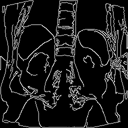
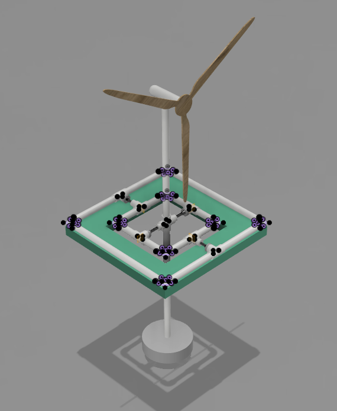

Hi, welcome to my site!
I'm Cooper, a high school student at Brewer High School, working on personal projects in the fields of computer science, engineering and additive manufacturing. With the Brewer High School Cross Country, Indoor and Outdoor Track teams, I am a distance specialist, running the 1600 meter, 3200 meter, and 5K and, on occasion, the 800 meter when it suits me.
From a young age, I have had an intense curiousity to understand how and why the world works. Today, I continue this search through embetterment of my intellectual abilities and skills in computer science, biology, literature and philosophy. I believe that by observing the world through the lens of a skeptic, we can free ourselves from the shackles emotional appeal, prejudice, and propaganda.
Personally, I am a huge proponent of how a skilled knowledge of additive manufacturing, or 3D printing, and computer-aided design can serve to benefit the lives of individuals everywhere and is much more than just a simple novelty as put forth by the general consensus.
I hope you find something on this blog useful.
Cooper Parlee